Context
Both Schoolhouse.world and Khan World School (KWS) are Sal Khan-led ed-tech initiatives. Schoolhouse.world designs and builds teaching tools. KWS is different than traditional schools because it is remote-only and students take tests on course material at their own pace.
Problem
Because test-taking is not synchronized between students like it is at traditional schools, it was difficult for KWS teachers to monitor the progress of every single student taking their course.
Outcome
The first version of the project was shipped in August 2022 and is being used with teachers at Khan World School.
Project Type
schoolhouse.world | Internship project
Role
Lead Product Designer
Skills
Visual Design, Iconography, Interaction Design, Product Thinking, Wireframing, Prototyping
Team
1 Product Manager, 2 Engineers
Timeline
4 weeks
What was shipped?
Group students by class

Most teachers teach more than one class or subject. To manage students between multiple classes, teachers can create classrooms for their respective students to join.
Visualization for test-taking progress

Teachers would like a high-level understanding of overall class progress. The table visibly displays testing (called Certifications in Schoolhouse) progress for every student in the class.
View individual student effort

Sometimes, there are students that struggle more than others. To obtain more insight into the individual needs of their students, teachers can view individual details for each student.
although i led the design for the “classrooms” project from end-to-end, this case study will focus on how we visualized test-taking progress, as it was the most interesting part of the problem!
User research
With the engineers and product manager, we started by interviewing teachers at Khan World School to understand what was important when checking up on the test-taking progress of their students. These were some of our key insights:
Insight #1
Teachers preferred one high-level report of their entire class over detailed reports of individual students.
Insight #2
Teachers still required access to detailed reports of individual students. Teachers want to support students who are struggling and need details to diagnose potential areas of concern.
Insight #3
As with great data visualization, teachers would like to interpret conclusions about their class quickly and with ease.
Early explorations
Choosing a visualization method
We knew each class would have around 30 students taking 10 unit tests. I began by exploring different visualization methods we could use to correlate students and unit tests.
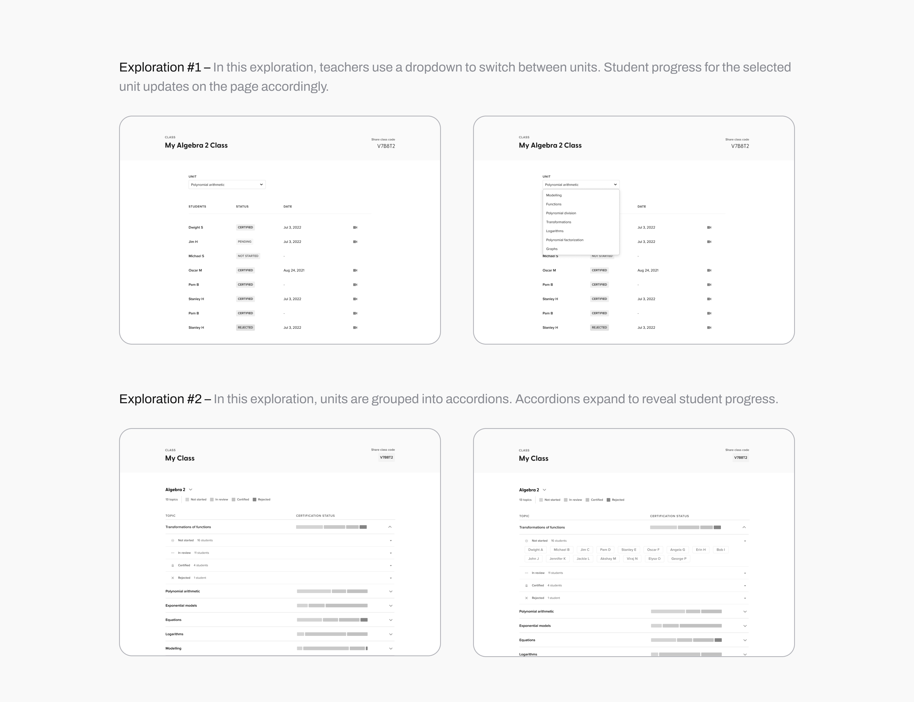
After getting feedback from the project team, I learned that teachers want to quickly scan and see how everyone in their class is doing. We chose to proceed with a third visualization method.
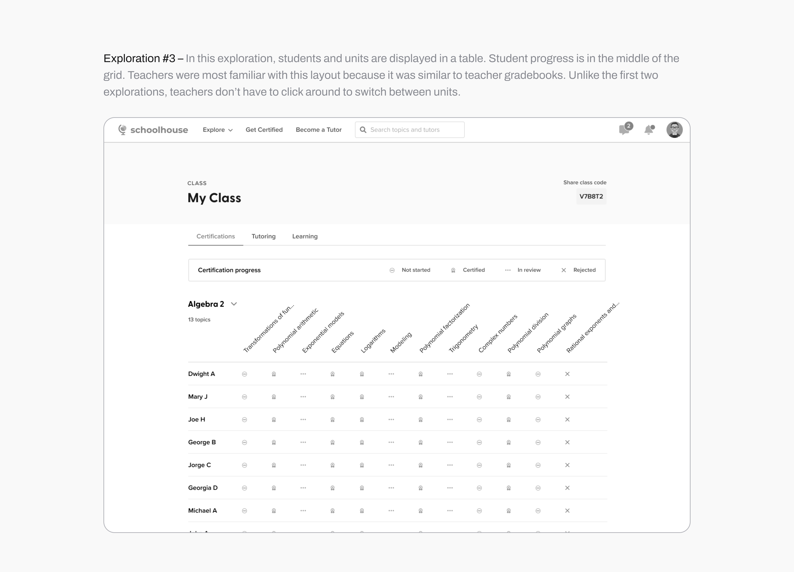
Taking digital inspiration from the physical world.
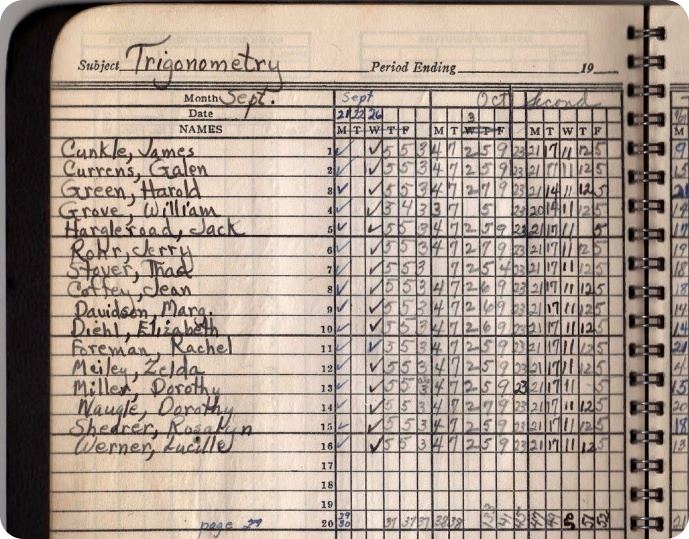
A circa-1940 Shippensburg High gradebook. From Pinterest.
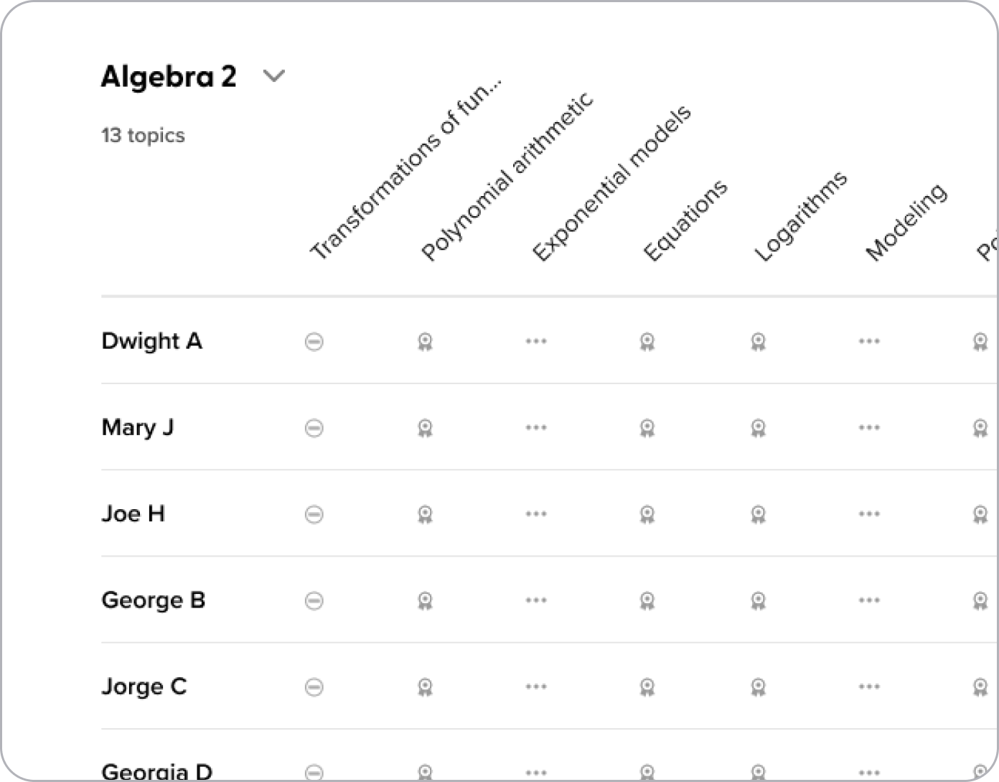
The direction we chose because it mirrors real-life gradebooks!
Although we were remote, we had weekly meetings to get feedback. I take notes directly in Figma and highlight feedback in a bold colour, like hot pink!
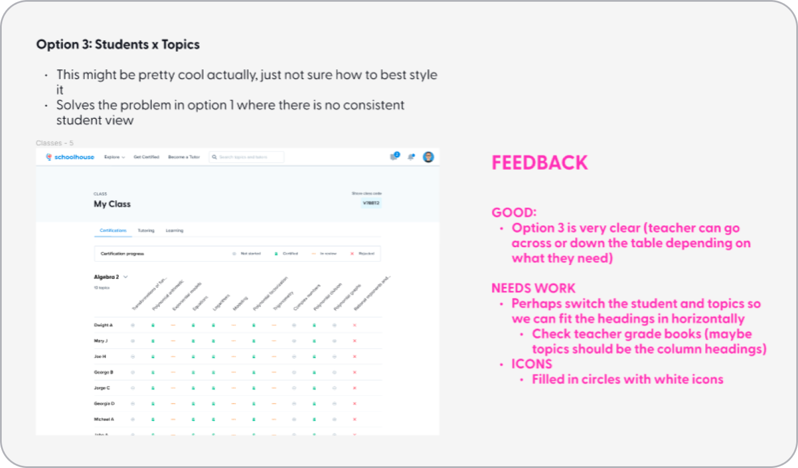
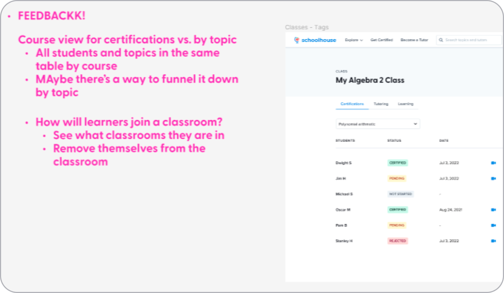
Low-med fidelity prototyping
Designing the progress table
KWS used 4 statuses to describe student test-taking progress – not started, in review, certified, or rejected. To begin, I braindumped a LOT of potential options for our progress table.
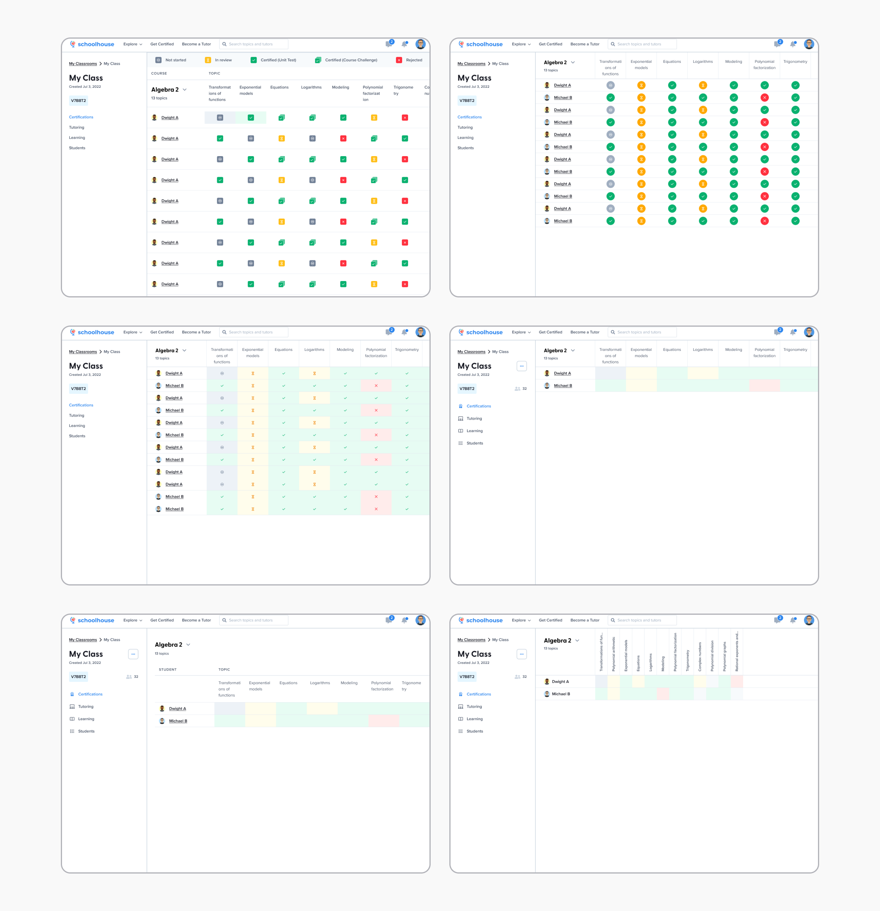
As a team, we discussed what we liked and didn’t like and I used the feedback to prototype a table that was refined enough to show to KWS teachers and get feedback.
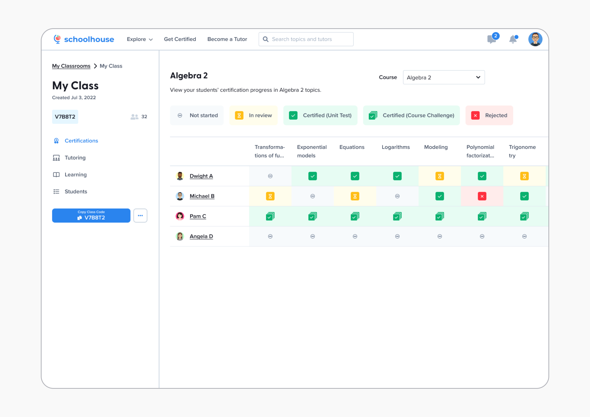
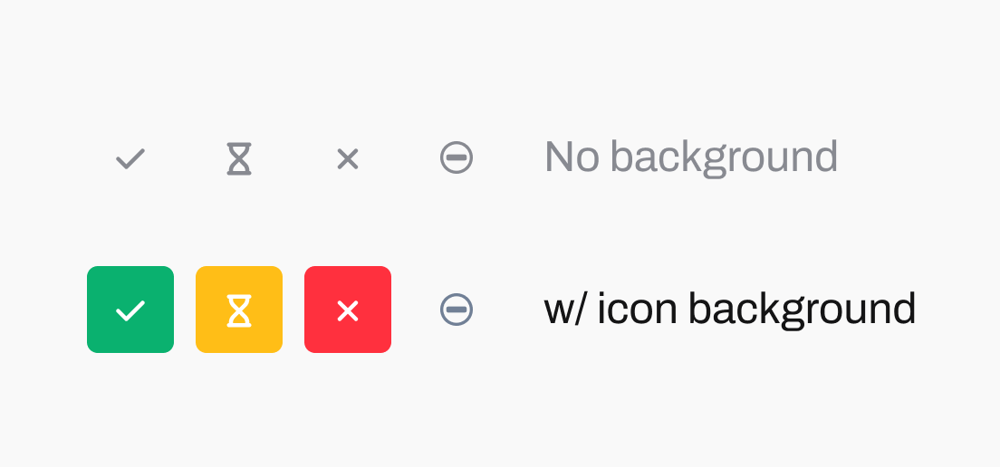
I added a background around the icon so there was more contrast between statuses. However, I left the not started state without a background to minimize visual clutter and because it was the default state for every student.
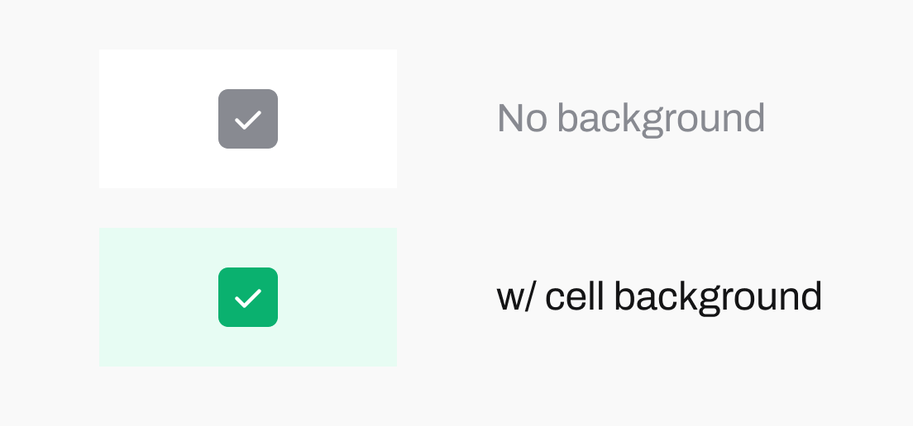
For even more contrast, I added colour to every cell. This also filled in the white space on the table, so that the table moved into the foreground rather than blending in with the background.
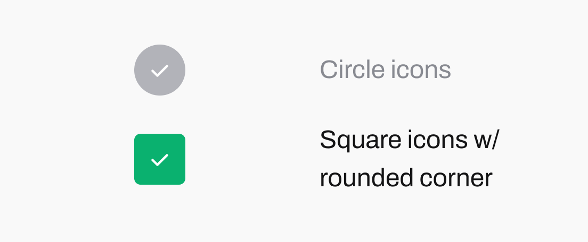
I used square icons because the straight edges aligned with the rigid rows and columns of the table. However, I rounded the corners 4px so that the icon was consistent with our playful tone.
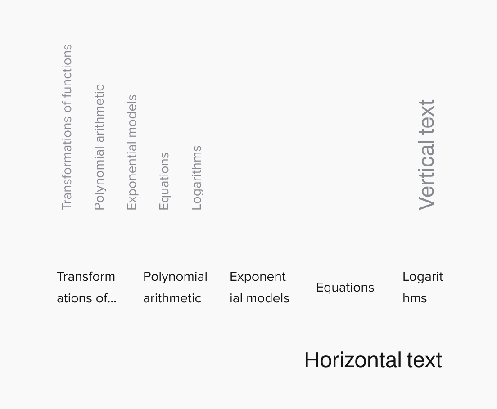
Lastly, I printed the unit names horizontally, rather than vertically. Although this meant that many unit names had to be truncated, it was easier for teachers to read. Vertical text might work for a physical gradebook because teachers can rotate their books in physical space, but that’s not really possible in the digital space. The vertical text would also be very difficult for engineers to develop.
It was all in the details, but these decisions were made so teachers could quickly scan and interpret conclusions about their class with ease.
Iconography
I also curated an icon set for the progress table. The Schoolhouse design system used icons from Font Awesome, so I had to decide which of their icons could be used to represent each of the 4 statuses – not started, complete, in review and rejected.
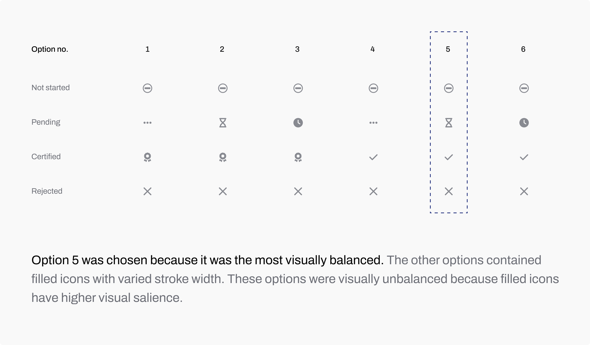
User feedback
The project team met with ~5 KWS teachers over Zoom. During the meeting, I walked them through the prototype and asked them about their overall opinions on the direction we were taking. Feedback was generally positive:
The table provided just enough high-level information for the teachers to quickly scan and see how everyone in their class was doing
It’s great that the table links to detailed individual student reports so the teachers have details to diagnose areas of concern
Teachers wished the “course test” had its own column at the beginning of the table. Contrary to my assumption, passing a course test did not mean students were successful at completing the course.
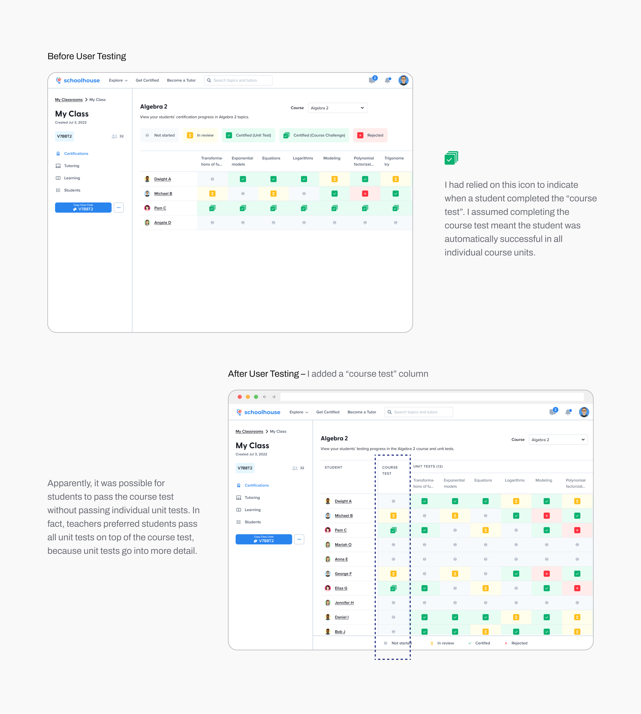
The final result
High fidelity design
In the final visualization, I moved the legend to the bottom of the page, where it would remain fixed upon scroll. I felt hierarchically, the legend was not a priority on this page.
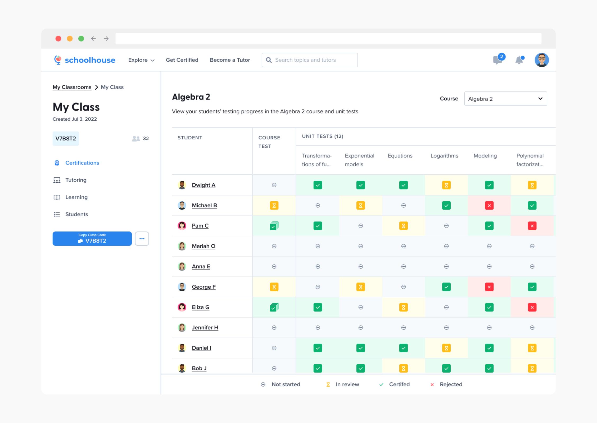
Interaction design / scrolling behaviour
I had to work with engineers to get our scrolling behaviour just right. As teachers scrolled vertically, the row header should remain fixed. As teachers scrolled horizontally, the column header should remain fixed. The legend will always remain fixed upon scroll. Again, these decisions were made so teachers could quickly scan and interpret conclusions about their class with ease.
Learnings
Share work early, even if it’s sketchy
At one point in this project, I didn’t feel comfortable sharing my work with team members because I felt like I hadn’t made any decisions and was still exploring options. Upon sharing however, I received very valuable and directional feedback.
Collaborating in parallel with engineers
At one point in this project, I didn’t feel comfortable sharing my work with team members because I felt like I hadn’t made any decisions and was still exploring options. Upon sharing however, I received very valuable and directional feedback.